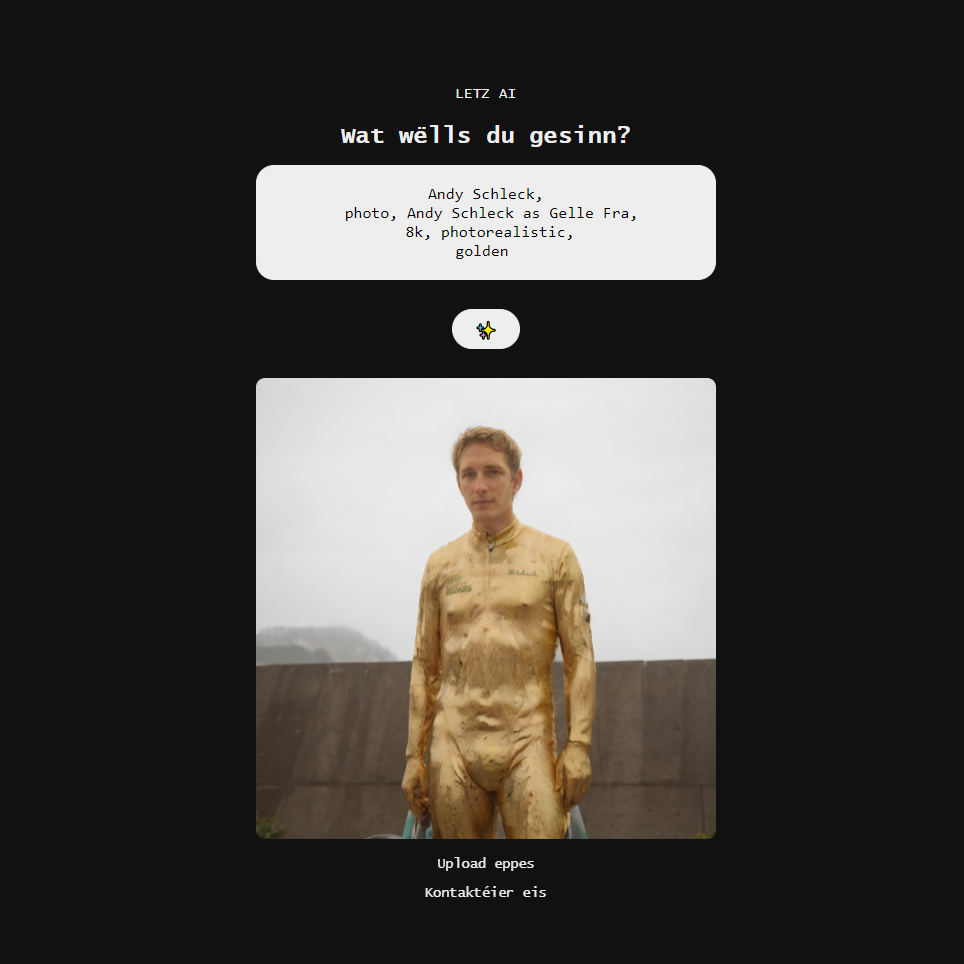
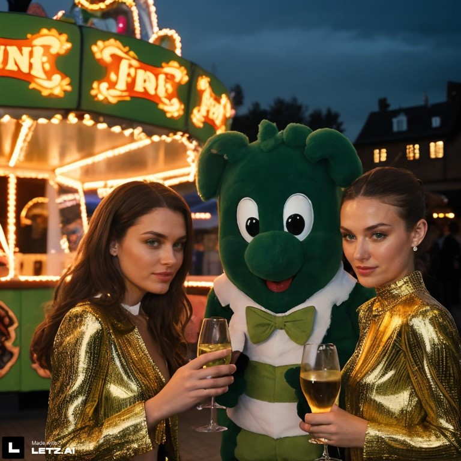
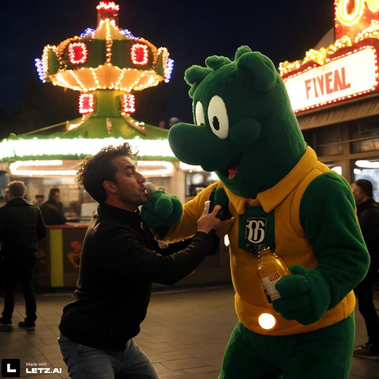

Access the project via www.letz.ai
Over the course of the past months, we’ve seen many different roadmaps unfold for creative AI tools.
We’ve seen DALL-E mark the beginnings of the generative AI hype. We’ve seen Stable Diffusion pave the way for a huge open-source movement. We’ve seen Midjourney reach extreme levels of photorealistic quality. But all of these systems lack one important aspect of today’s internet: they have no social features. In other words: You can’t interact with others when using them and you can't generate images of yourself, your friends, your products, or your local environments. As a consequence, the images you can come up with are often meaningless, unless you're one of the few people who actually do proper AI art.
Furthermore, as Luxembourgers, we're often at a disadvantage when it comes to new global innovations. Due to our (almost) secret language and a unique niche market, we're often left on the sidelines when new products are being rolled out.
This was also true for generative AI systems and it started to bother me.
So at the beginning of Summer, while walking on a trail in the ‘Mullerthal’ in my home country Luxembourg, I got an idea. Then I gave us one month of time and a mission.
I asked: What if we took advantage of this "Everybody knows Everyone" microcosm and built a platform that allowed everyone to generate images of themselves, their friends, and their favorite local stuff like the 'Gëlle Fra'?
What would it take to make such a platform interesting for the average person? What if we built a platform that allows anyone to create images of literally anything from their local community? What if you could interact with your peers through unique images, instead of text messages?
After all, a picture says more than a 1000 words, right?
From idea to proof of concept

The first feedback


Setting sails
If you live in Luxembourg, join the journey today on
www.letz.ai